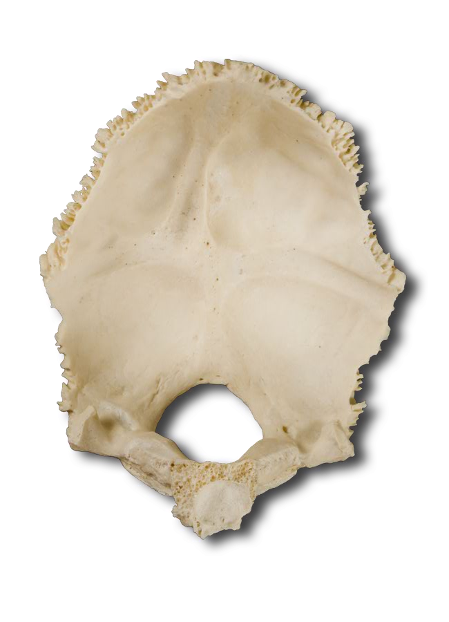
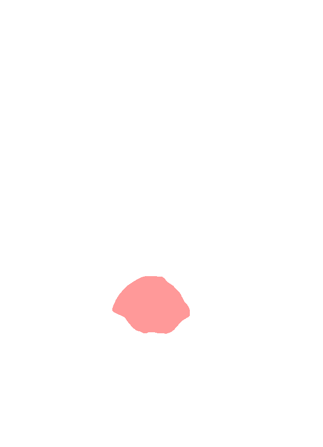
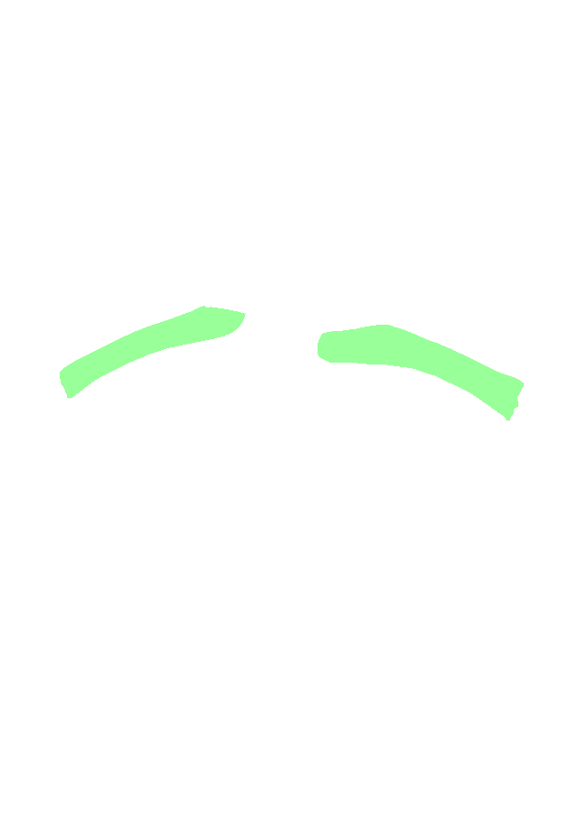
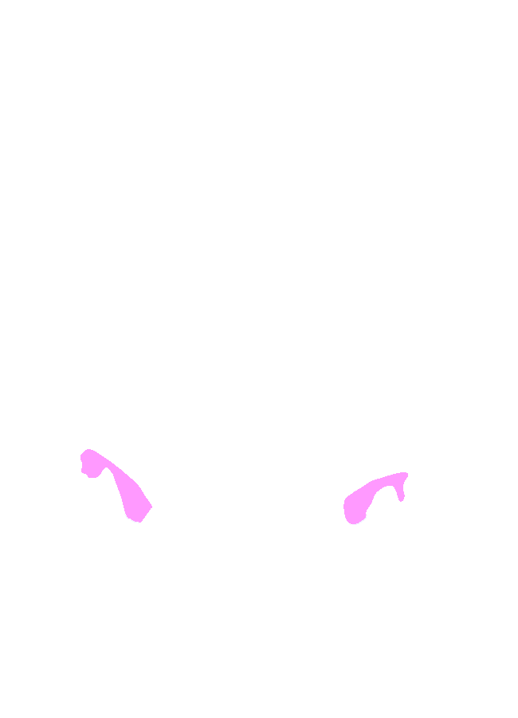
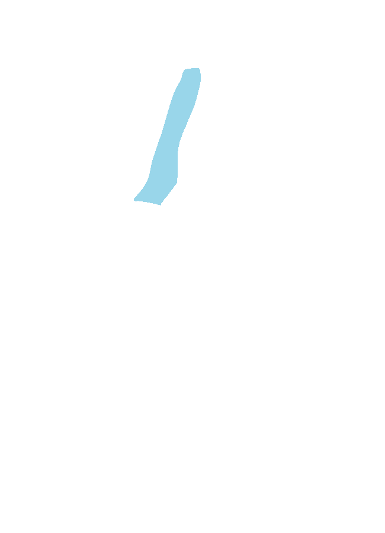
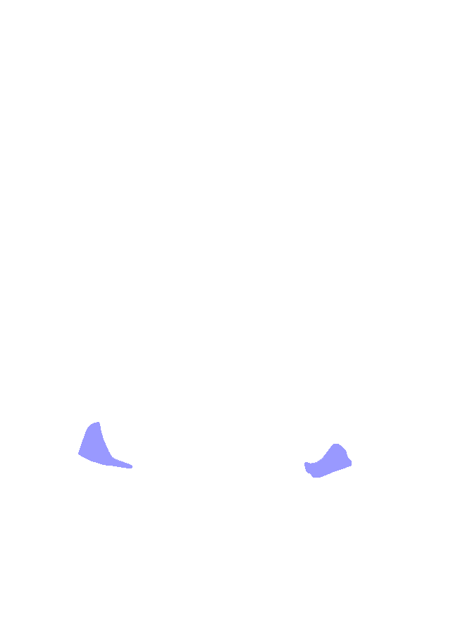

Menu
Head and Neck Bones and Neuro
Occipital Bone
Interior view
Foramen magnum
Transverse sinus grooves
Sigmoid sinus grooves
Condyloid canal
Superior sagittal sinus groove
Jugular notches
Internal occipital protuberance
Internal occipital crest
Inferior petrosal sinus grooves






Prev
Overview
Next